9E
| Rear Door Glass Removal and Installation |
Removal
1)For manual window type, pull off snap using cloth (1) as shown and remove window regulator handle (2).

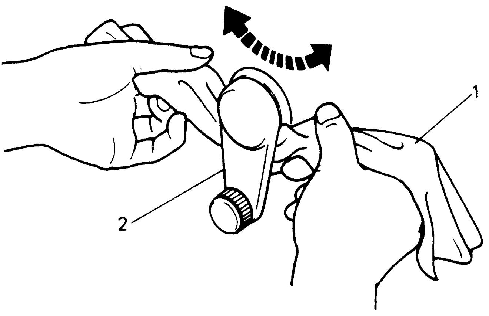
 "Expand image")
2)Lower rear door glass fully.
3)For power window type, disconnect negative (–) cable at battery.
4)Remove inside handle cap (1).
5)Remove screws (2) and clips, remove door trim (3) by pulling it in arrow direction, and then disconnect connectors of door harness.
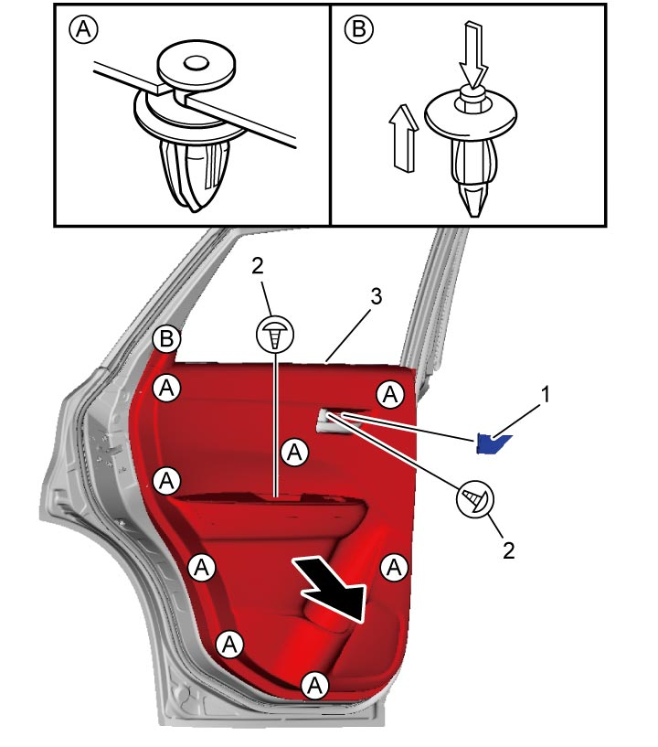
 "Expand image")
6)Remove rear door center pillar garnish (1).
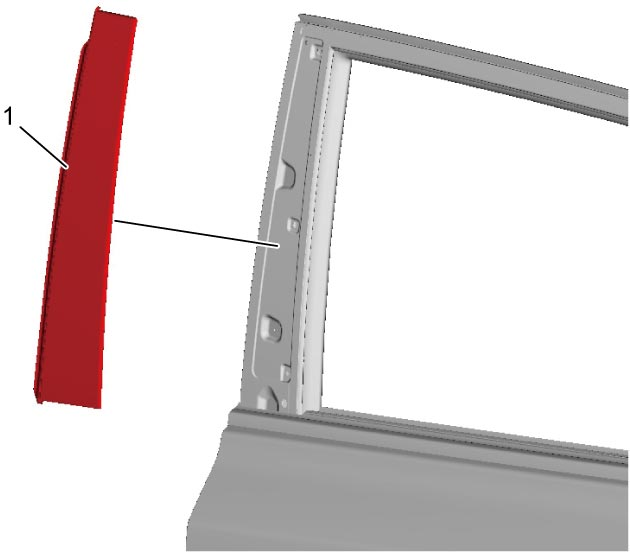
 "Expand image")
7)Remove screw (1), remove rear door outer garnish (2).
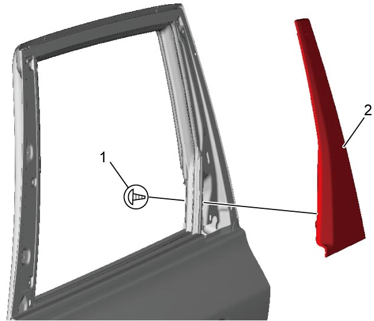
 "Expand image")
8)Remove rear door outer weather-strip (1) by moving it in arrow directions in numerical order (“1” – “2”) as shown in figure.
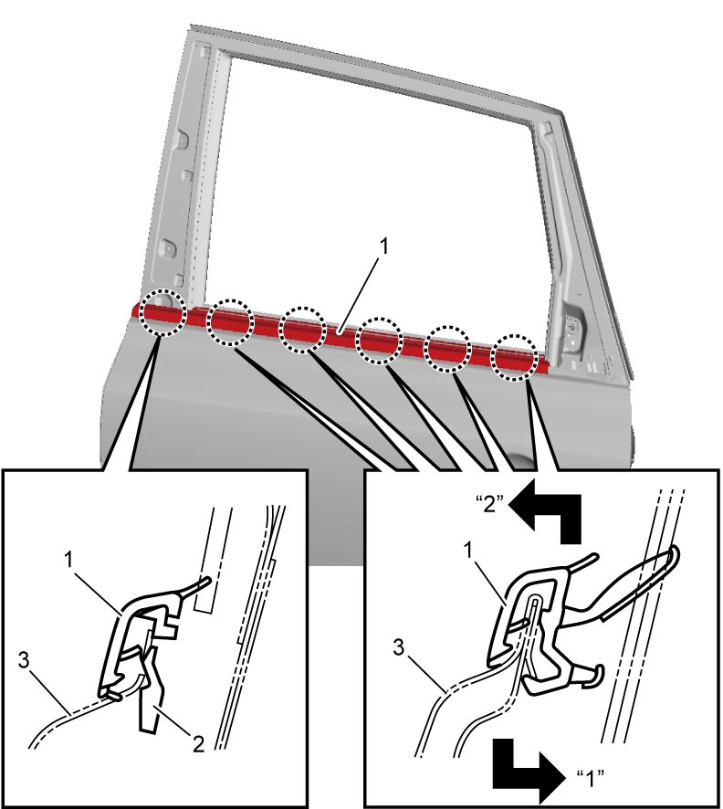
 "Expand image")
| 2. | Claw | 3. | Rear door outer panel |
9)Remove rear door inner weather-strip (1) by pulling it in arrow direction in numerical order (“1” – “2”) as shown in figure.
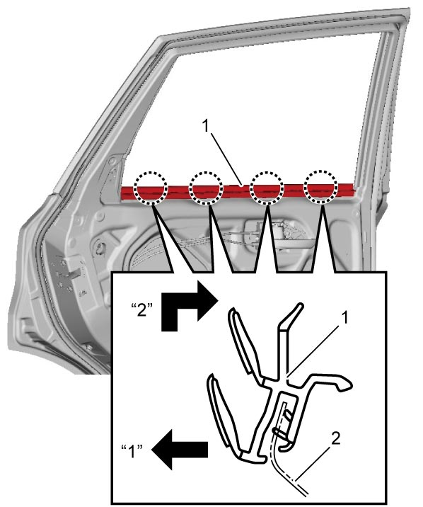
 "Expand image")
| 2. | Rear door inner panel |
10)Remove door trim bracket (1) and door sealing cover (2).
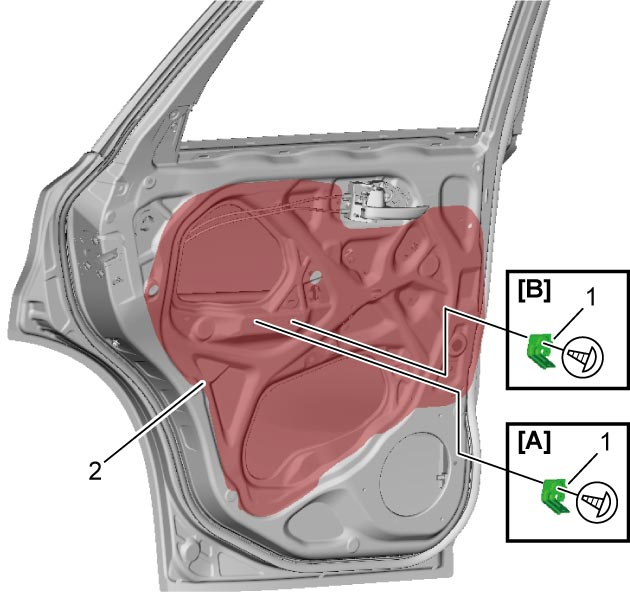
 "Expand image")
| [A]: | Rear manual window type | [B]: | Rear power window type |
11)Remove glass run (1).
12)Remove rear door sash bolts (2) and remove rear door sash (3).
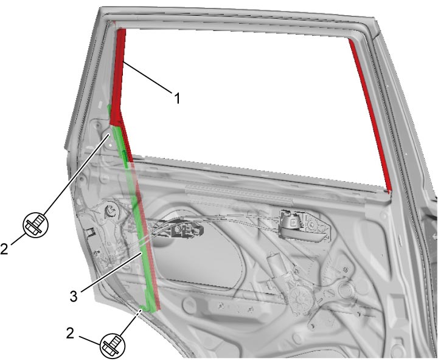
 "Expand image")
13)Turn rear door glass (1) in arrow direction “1” to remove glass bottom channel (3) from rear window regulator assembly (2) and then remove rear door glass in arrow direction “2”.
 "Expand image")
14)Remove glass bottom channel from rear door glass if necessary.
Installation
Reverse removal procedure noting the following points.
•Install glass bottom channel (1) to specified position of rear door glass (2) if it is removed from rear door glass.
•Insert rear door glass (3) in arrow direction “1” and turn in arrow direction “2” to move glass bottom channel (1) in arrow direction “3” and fit to rear window regulator assembly (2).
•Tighten rear door sash bolts in numerical order (“1” – “2”) to specified torque.
•If glass run is deformed, replace it with new one.
•Fix door sealing cover (1) with butyl tape (2).
•Stick new double-stick tapes (1) to rear door outer garnish (2) in the position as shown in figure.
•Install rear door outer garnish in arrow direction in numerical order (“1” – “2”).
•Press the garnish to stick it securely.
•Tighten rear door outer garnish screw (3) to specified torque.
•Stick new double-stick tapes (1) to rear door center pillar garnish (2) in the position as shown in figure.
•Install rear door center pillar garnish in arrow direction in numerical order (“1” – “3”) as shown in figure.
•Press the garnish to stick it securely.
•For manual window type, raise rear door glass fully and install window regulator handle positioning it within “a” range shown in figure.
Glass bottom channel installation position
“a”: 263.5 mm (10.37 in.)
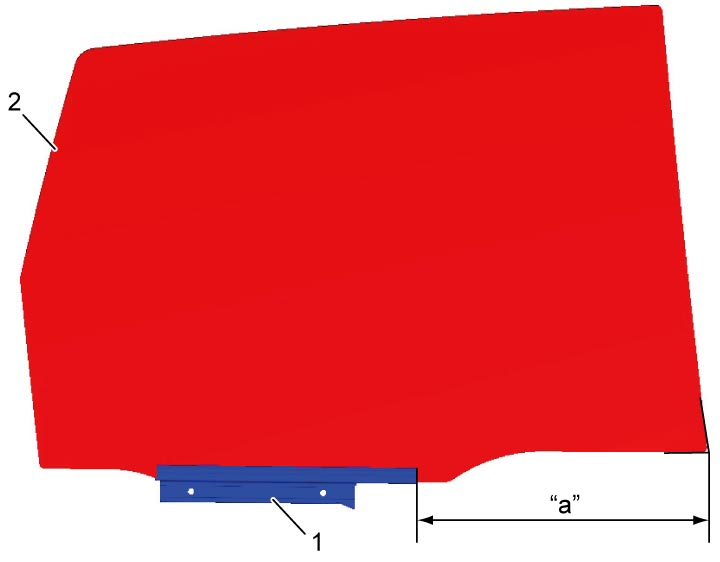
 "Expand image")
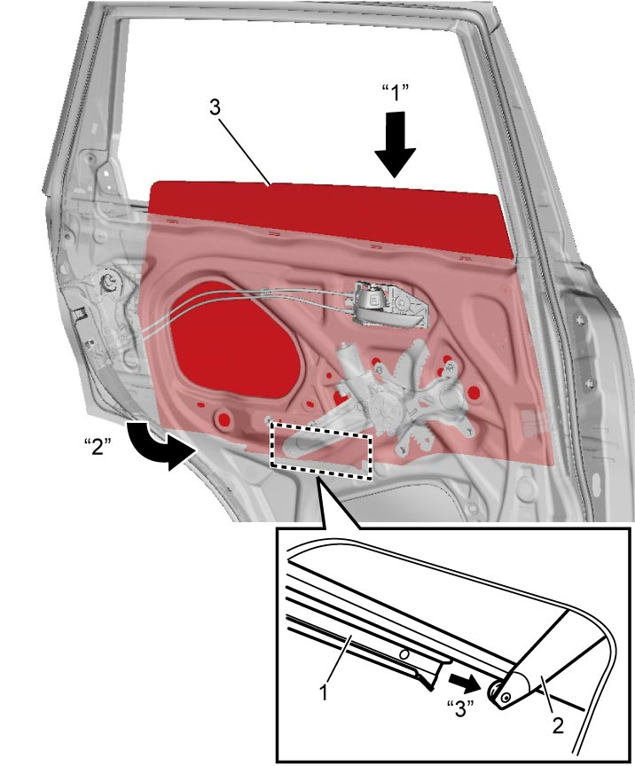
 "Expand image")
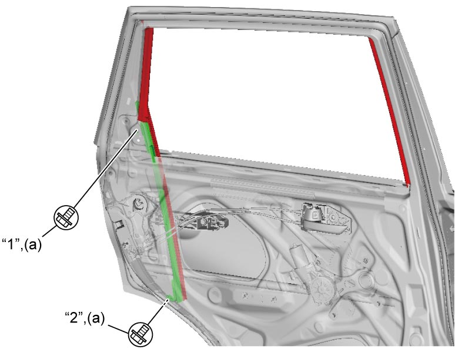
 "Expand image")
•Fix door sealing cover (1) with butyl tape (2).
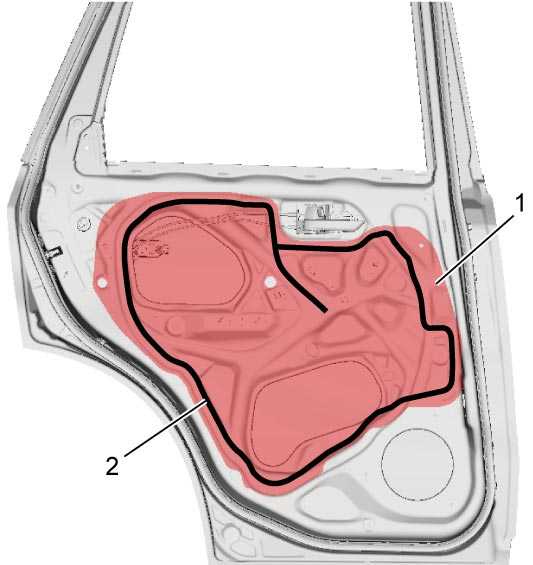
 "Expand image")
•Install rear door outer garnish in arrow direction in numerical order (“1” – “2”).
•Press the garnish to stick it securely.
•Tighten rear door outer garnish screw (3) to specified torque.
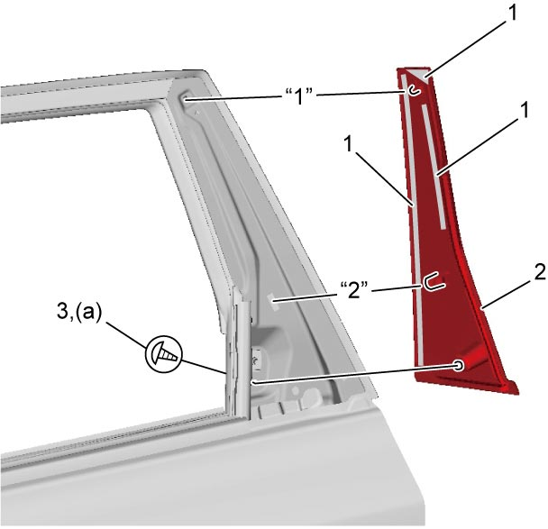
 "Expand image")
•Install rear door center pillar garnish in arrow direction in numerical order (“1” – “3”) as shown in figure.
•Press the garnish to stick it securely.
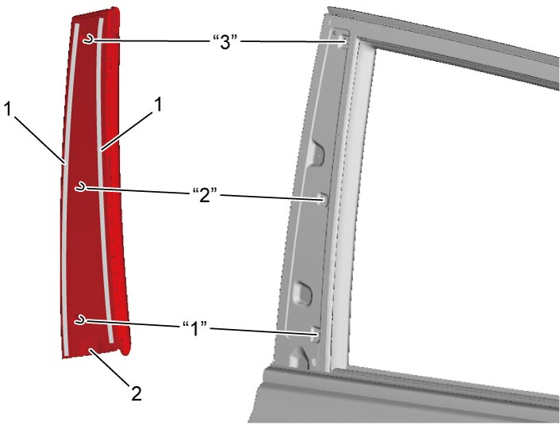
 "Expand image")
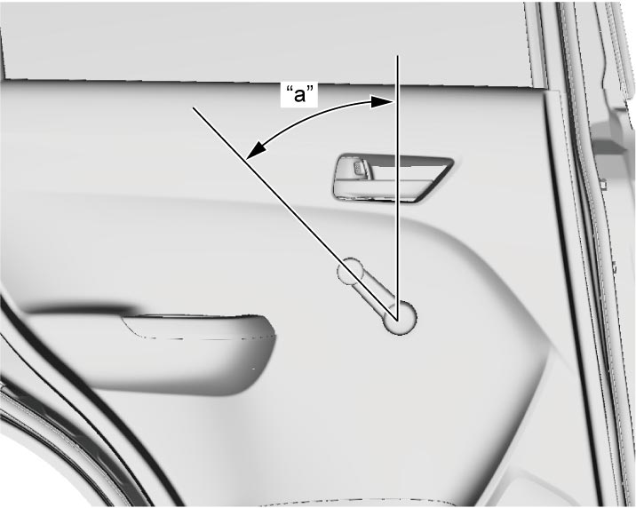
 "Expand image")
| “a”: | 45° ± 25° |